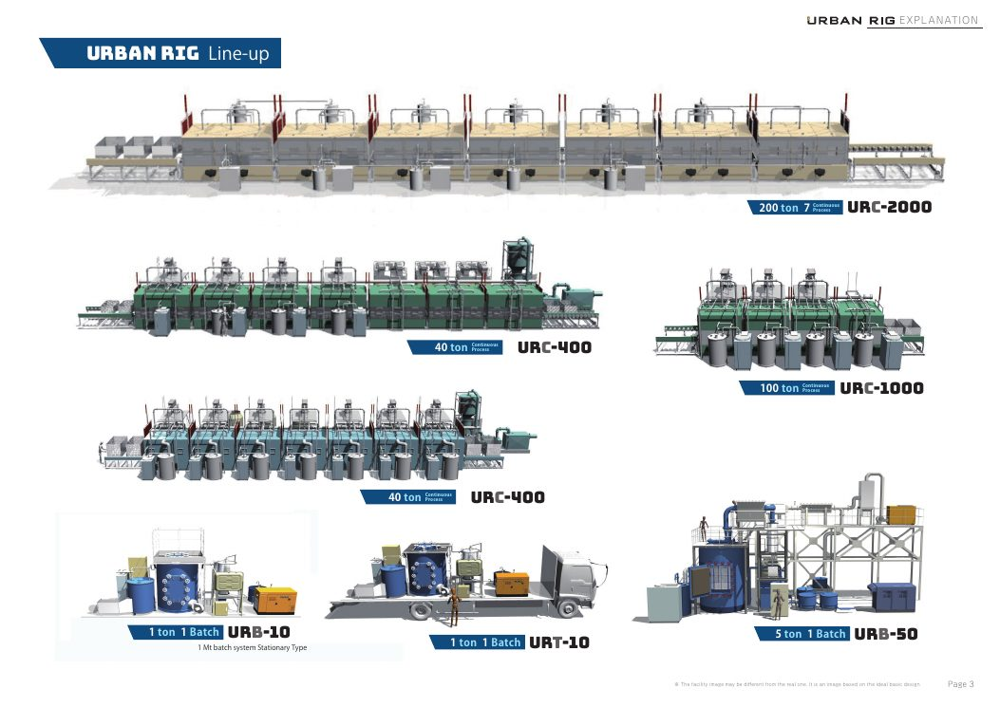
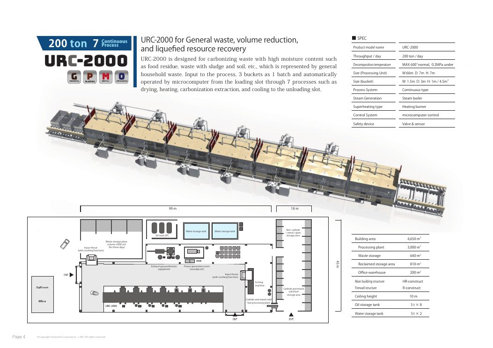
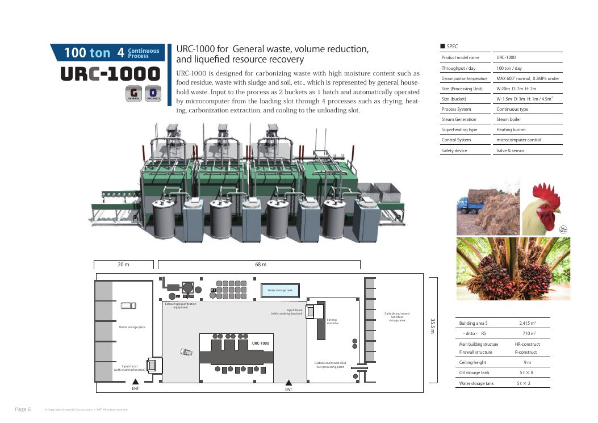
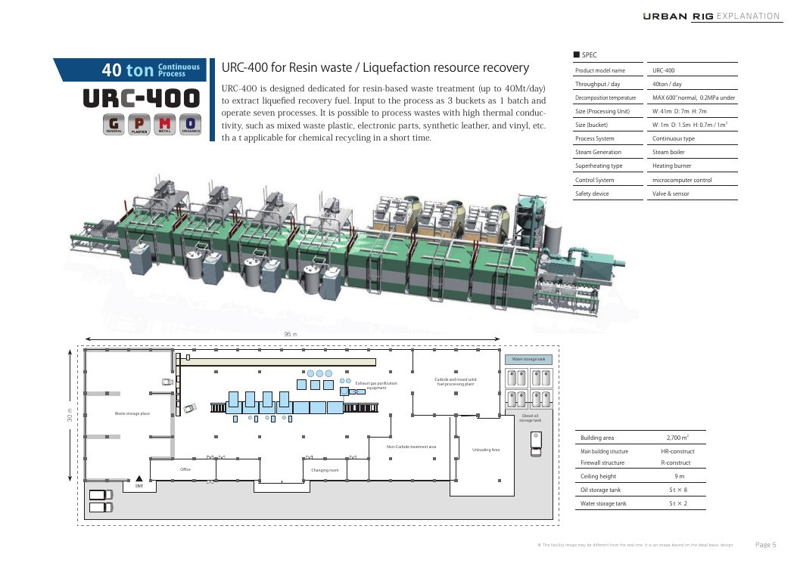
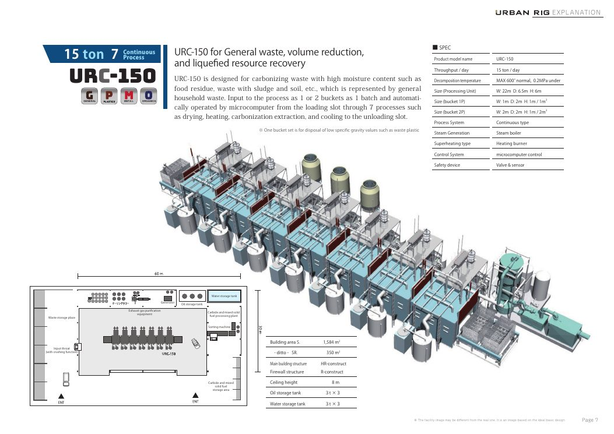
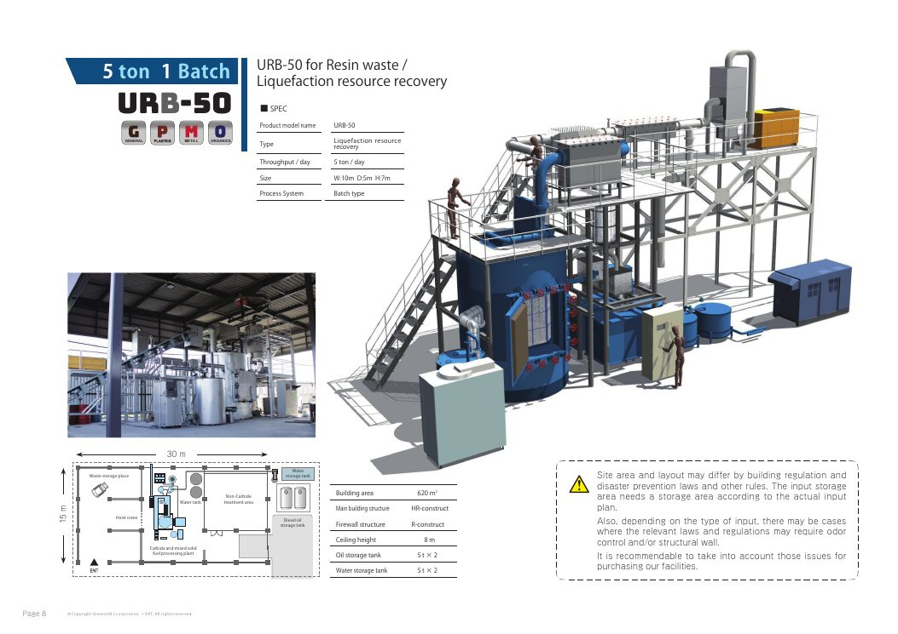
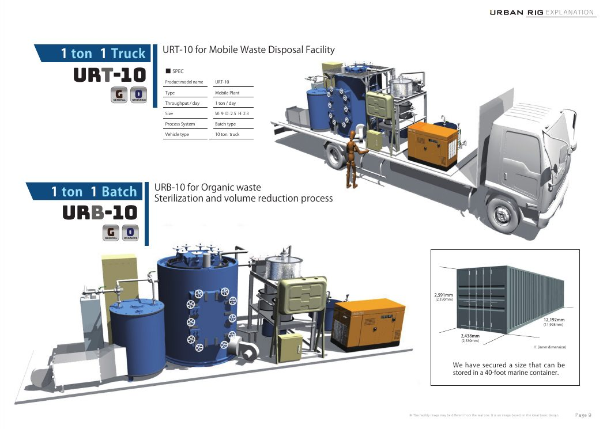
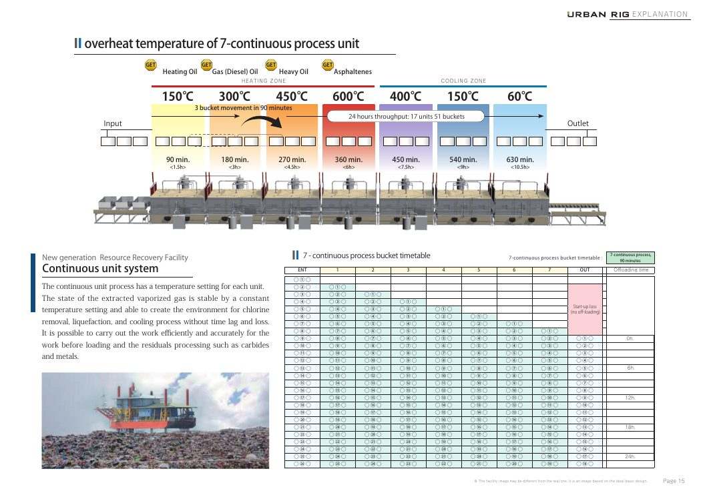
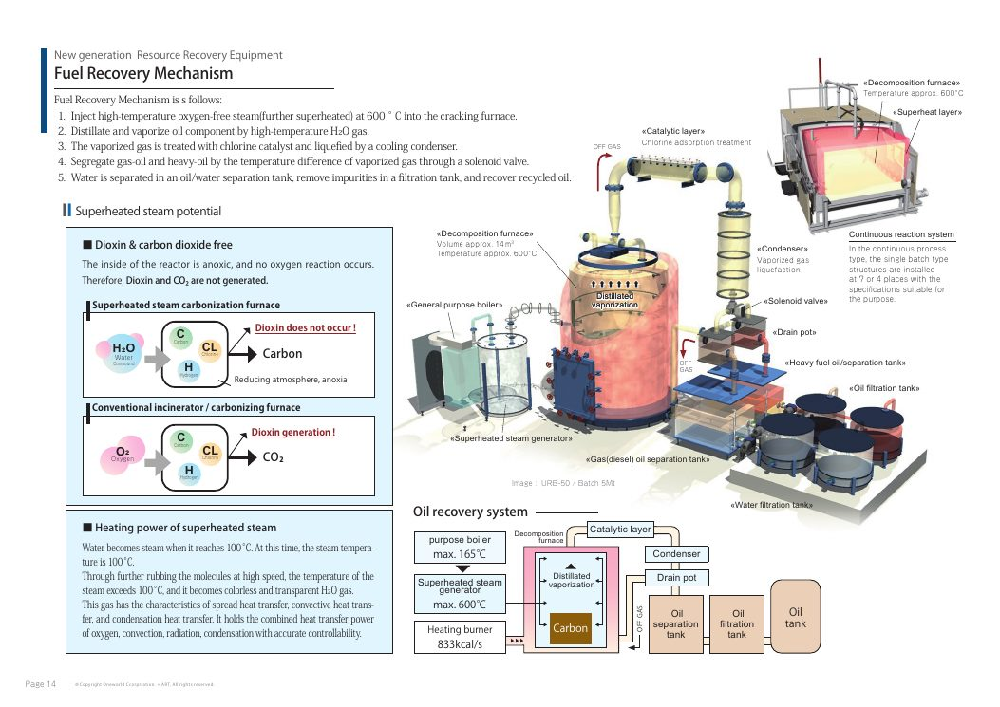

Annex 1. Process and Technology
This annex describes what the Urban Rig is, how it works, what it produces and how it compares with other waste treatment routes. It describes; Annex 2 proves the performance. Where a figure is already proven in Annex 2, this annex links to the Annex 2 evidence sheet.
How to Read This Annex
The Urban Rig is designed, built and documented by OneWorld Corporation (Osaka), the sponsor of this business plan (decision D-027). Its documentation is the design basis of the project (decisions D-016 and D-020). Every statement taken from it is marked "OneWorld design data" and rated 95 % or 90 % confidenceD-022; these are the company's own figures and have not been verified independently.
Each figure or fact is followed by a small link. It opens the evidence sheet: what the evidence shows, its confidence, the source document and page, or the calculation. Sheets numbered 1.M, 1.R and 1.C belong to this annex (manufacturer documents, regulations and references, calculations); sheets numbered 2.x link to Annex 2. All sheets are listed in the index of evidence sheets.
This annex contains no revenue, price or cost figures. Prices are in Annex 3, costs in Annex 9 and revenues in the financial model.
Key Messages
- Waste in, fuels and char out. According to OneWorld design data, the Urban Rig heats waste with superheated steam in an oxygen-free reactor and recovers fuel oil, char, metals and a combustible gas1.M.a.
- A line of reactors, not a single kiln. The reference plant, the URC-2000, treats 200 t per day2.3.b. According to OneWorld design data, buckets of waste move through a line of 7 heated and cooled units1.M.d.
- The process heat comes from the waste on resin-rich feeds. The measured gas, once air is removed, covers the burner heat demand 2.9 times on OneWorld's resin-rich example, with 11.5 % gas2.5.d.3, and 3.7 times on pure plastic with 15 % gas, a rounded value of the measured gas by difference2.5.d.2D-038. On household and municipal waste, self-sufficiency is not established; their energy balance is built in Annex 5, according to the feed chosenD-029. Electricity is bought from the grid2.3.e.
- Very low dioxin levels. Measured dioxins were 0.011 and 0.025 ng-TEQ/m³ in 20232.2.j and 0.067 ng-TEQ/m³ in 20222.2.d, below the EU limit of 0.12.4.a.
- Three points to secure with OneWorld: the pre-treatment actually required (the plant layouts include a crusher and a sorting machine), the route of the off-gas in the plant, and the acceptance of PVC-rich waste (Section 1.6).
1.1 What the Urban Rig Does
According to OneWorld design data, the Urban Rig makes the inside of the reactor hot and oxygen-free with superheated steam, and recovers fuel oil from resin-based mixed waste, including waste mixed with food residue and mud1.M.a. The organic part that does not become oil or gas leaves as char; metals leave in a non-oxidised state, according to the same source1.M.a.
The plant proposed for the project is the URC-2000, a continuous plant rated at 200 t per day2.3.b. OneWorld designed it for household waste with a high moisture content, such as food residue, sludge and soil1.M.b.
The OneWorld range
OneWorld offers batch units and continuous lines1.M.c:
| Model | Type | Capacity | Units in line | Bucket | Processing unit (W x D x H) |
|---|---|---|---|---|---|
| URC-2000 | Continuous, household waste | 200 t per day1.M.c | 7 processes1.M.c | 4.5 m³, 3 per batch1.M.c | 66 x 7 x 7 m1.M.c |
| URC-1000 | Continuous, household waste | 100 t per day1.M.c | 4 processes1.M.c | 4.5 m³, 2 per batch1.M.c | 20 x 7 x 7 m1.M.c |
| URC-400 | Continuous, resin waste | 40 t per day1.M.c | seven processes1.M.c | 1 m³, 3 per batch1.M.c | 41 x 7 x 7 m1.M.c |
| URC-150 | Continuous, household waste | 15 t per day1.M.c | 7 processes1.M.c | 1 or 2 m³1.M.c | 22 x 6.5 x 6 m1.M.c |
| URB-50 | Batch, resin waste | 5 t per day1.M.c | one reactor | 10 x 5 x 7 m1.M.c | |
| URT-10 | Batch, mobile on a 10 t truck | 1 t per day1.M.c | one reactor | 9 x 2.5 x 2.3 m1.M.c | |
| URB-10 | Batch, organic waste sterilisation | 1 t1.M.c | one reactor |


Specification sheets of the other models, as published by OneWorld:





The tests reported in Annex 2 were run on batch units: the Noda test unit in 2022 and the truck-mounted URT-10 in 20212.1.a2.3.f.
1.2 How It Works
1.2.1 Reactor Design and Temperature Zones
According to OneWorld design data, a continuous plant is a line of batch-type reactor units, installed at 7 or 4 places depending on the purpose, each held at its own temperature1.M.a. The waste stays in its bucket; the buckets move from one unit to the next1.M.d.
For the URC-2000, OneWorld design data state:
- 7 units of about 12 t, built in series in the factory1.M.d;
- buckets of 4.5 m³, moved 3 at a time, every 90 minutes1.M.a;
- a total time of 10.5 hours from inlet to outlet1.C.a;
- 48 buckets per 24 hours, each of at most 4.17 t, which gives 200.16 t per day2.3.b2.5.f.29;
- a heating zone at 150, 300, 450 and 600 °C, then a cooling zone at 400, 150 and 60 °C1.M.a;
- a decomposition temperature of 600 °C at most, at a pressure below 0.2 MPa2.3.b.
The number of units and the temperature steps depend on the machine. Other OneWorld documents show a 2014 drawing with a maximum zone temperature of 500 °C1.M.e, a 2024 animation with steps at 250, 450, 600 and 350 °C1.M.g, and a 9-unit continuous machine at Toyohashi1.M.f. The configuration to be delivered is to be confirmed with OneWorld (R-024).

1.2.2 Superheated Steam Environment
According to OneWorld design data, a steam boiler (165 °C at most) feeds a superheated steam generator (600 °C at most), heated by a burner; the steam at 600 °C is injected into the reactor, where it displaces oxygen1.M.a. In this oxygen-free, reducing atmosphere the waste is not burned: its oil fraction is distilled and vaporised, and the rest carbonises1.M.a.
The vapours then follow this path, according to OneWorld design data1.M.a:
- a catalytic layer that adsorbs chlorine;
- a condenser that liquefies the vapours;
- a solenoid valve that separates gas oil and heavy oil according to the temperature of the vapour;
- an oil and water separation tank, then a filtration tank.
The Noda test unit had the same sequence: the gas from the pyrolysis furnace passed through a catalytic reaction tank before the condenser2.1.g. OneWorld design data also state that chlorine from PVC becomes dilute hydrochloric acid in the steam and does not damage the reactor2.3.h.

1.2.3 Off-Gas Recycling
The gas that does not condense is a fuel. The only analysis available shows hydrogen, methane, ethane, ethylene, propane, propylene and carbon monoxide, diluted with air at the sampling point2.2.f. Once oxygen and nitrogen are removed, 91.4 % of it is combustible2.5.c.11 and its net calorific value is 37.4 MJ/kg2.5.c.12.
According to OneWorld design data, the plant burns its own recovered fuel in the boiler and the superheater2.3.d. How the off-gas is routed in a URC-2000 (to the superheater burner, to the boiler, or to a separate combustion stage) is not described in the documents read; the parts list of the Toyohashi machine includes a combustion tower connected to the gas-liquid separator1.M.f. This is to be confirmed with OneWorld (R-025), because it also decides how the plant is permitted (Section 1.5).
1.2.4 Continuous Operation
In a continuous line, every unit holds a bucket at all times. Each step, the buckets advance by one unit: a bucket of fresh waste enters and a bucket of char and metals leaves1.M.a. After a cold start, the first 8 batches give no output while the line fills1.M.a. Each unit stays at a constant temperature, which, according to OneWorld design data, keeps the vapour stable and avoids the heating and cooling losses of a batch reactor1.M.a.
1.3 What Comes Out
| Output | What it is | OneWorld design data | Measured quality (Annex 2) |
|---|---|---|---|
| Oils | Light (heating) oil, gas (diesel) oil and heavy oil; asphaltenes remain at the hottest step1.M.a | 76.5 % of input on a resin-rich feed2.5.f.11; 5 % on household waste with 10 % resins2.3.a | Gross calorific value 45,000 to 46,000 J/g2.2.a |
| Char | Carbon-rich solid residue1.M.a | 5 % of input on a resin-rich feed2.3.c; 25 % on household waste with 10 % resins2.3.a | 24.6 MJ/kg for char from plastic residues2.5.f.1; 32,090 J/g for char from household waste, measured on a urethane char2.2.lD-038 |
| Metals and glass | Separated from the char; metals not oxidised, according to OneWorld design data1.M.a | 2 % on a resin-rich feed2.3.c; 0 to 5 % on household waste2.3.a | not analysed (R-031) |
| Gas | Non-condensable gas, used as process fuel (Section 1.2.3) | 5 % on household waste with 10 % resins2.3.a | 37.4 MJ/kg2.5.c.12 |
| Water | Condensed steam and moisture of the waste | 5 % on a resin-rich feed, reused in the boiler2.3.c | untreated water above discharge standards; treatment to be designed2.1.h |
1.3.1 Pyrolysis Oil and Its Fractions
In OneWorld's design balance for a resin-rich feed, gas oil makes up 80 % of the oil, heating oil 10 % and heavy oil 10 %1.C.b1.C.c1.C.d. These shares are design figures; the output of each unit of a continuous line has not been measured (R-013). The measured oils are described in Annex 2: calorific value, density, sulphur, and chlorine of 0.137 % and 0.526 % in the oils made from municipal waste2.2.a.
1.3.2 Char (Biochar, Carbide)
Two calorific values are used for the char, by feedD-038: 24.6 MJ/kg for char from plastic residues, the factor applied in the Chiba mass balances2.5.f.1, and 32,090 J/g for char from household waste, measured on a urethane char2.2.l. Both are well above the 12,000 kJ/kg minimum of a French solid recovered fuel2.4.l. Its intended outlet is as a solid fuel, for example blended with coke or coalD-026; specifications and prices are in Annex 3. It is not intended as a fertiliser: EU rules on pyrolysis materials in fertilising products exclude inputs from mixed municipal waste2.4.k.
1.3.3 Recovered Metals
According to OneWorld design data, metals are extracted in a non-oxidised state, because the reactor contains no oxygen1.M.a. In the 2020 tyre test, the steel wire was recovered and weighed separately (111 kg from 450 kg of tyres)2.3.g. The cleanliness and outlet of the metals are to be documented (R-031).
1.3.4 Off-Gas
See Section 1.2.3. On the household waste case, OneWorld's design gives 5 % of the input as off-gas2.3.a; the gas of the Chiba runs is calculated by difference and, for municipal feeds, includes the moisture of the waste; for mixed waste, the project takes the gas produced by the plastic fraction at 10 % of the plastic inputD-029.
1.4 Key Characteristics
1.4.1 Feedstock Acceptance and Pre-Sorting Needs
What OneWorld design data state. The Urban Rig does not require waste to be sorted or cleaned: plastics with mud, residues, metals or pesticides can be loaded after one day of storage to remove moisture1.M.a. The buckets take the waste as it is1.M.d.
What the plant layouts show. The site layouts of the same documents include an input throat with a crushing function and a sorting machine1.M.b1.M.e. A pre-treatment step is therefore part of the plant. Its specification (size, removal of inerts, bulky items and hazardous objects) is to be obtained from OneWorld (R-023) and costed in Annex 9.
What has been tested (Annex 2):
- PE, PP and PS, alone and mixed, and two municipal waste streams from Noda (packaging plastics and non-combustible residue)2.1.b;
- mixed plastics including some PVC pipe and FRP, on the URT-102.3.f;
- waste tyres2.3.g;
- shredder residue, which gave an oil that could not be measured2.1.b.
PVC. In the 2021 runs, the PVC stopped at the melting stage2.3.f. PVC also brings chlorine into the oil. Its acceptance will be settled with the chlorine investigation (R-013, R-021)D-026.
Not yet tested: raw household waste, paper and board, wood, food waste, textiles and PET (R-021).
1.4.2 Emissions, Including Dioxins
Dioxin levels are very low. The measurements gave 0.011 and 0.025 ng-TEQ/m³ in 20232.2.j and 0.067 ng-TEQ/m³ in 20222.2.d. All are below the EU limit for waste incineration of 0.1 ng/Nm³2.4.a. The 2023 values are within the best-available-technique range for new plants, below 0.01 to 0.04 ng I-TEQ/Nm³2.4.b.
OneWorld explains this by the absence of oxygen in the reactor, where dioxins cannot form2.3.d. The stack gas comes from the boiler, superheaters and heaters2.3.d, so the plant does emit combustion gas.
Other pollutants. Nitrogen oxides, sulphur oxides, dust and hydrogen chloride were all below the EU daily limits on the values as reported (Annex 2, Section 2.7). The values are not yet corrected to the EU reference of 11 % oxygen2.4.a, and the 2022 and 2023 reports are provisional; final reports are requested (R-016).
Flue gas treatment. OneWorld sells a flue gas treatment unit, PRIMO (removal of nitrogen oxides, sulphur oxides, dust and odour), as an option1.M.c. The configuration for a French plant is to be specified (R-029).
1.4.3 Fractional Oil Separation
Each unit of a continuous line is held at its own temperature, so each releases a different cut of vapour: according to OneWorld design data, kerosene-type oil, gas oil, heavy oil and asphaltenes from the coolest to the hottest step2.3.b. A solenoid valve then separates gas oil and heavy oil according to the vapour temperature1.M.a. The plant therefore delivers more than one oil grade, not a single crude oil.
The measured composition of an oil sample is analysed in Annex 2, Section 2.4.3. The share of each grade on a continuous line has not been measured (R-013).
1.4.4 Process Control and Automation
According to OneWorld design data, the continuous plants are controlled by microcomputer, from the loading slot to the unloading slot, with valves and sensors as safety devices1.M.b. The documents do not describe the parameters controlled, the safety interlocks, remote supervision or the operating staff (R-026).
1.4.5 Energy Requirements and Fuel Input
Annex 2 (Section 2.6) builds the energy balance on OneWorld's figures2.5.0D-038:
- Heat. The superheating burner corresponds to 1,507 MJ per tonne treated2.5.d.1. The gas covers this demand 2.9 times on OneWorld's resin-rich example, with 11.5 % gas2.5.d.3, and 3.7 times on pure plastic with 15 % gas2.5.d.2D-038. This supports OneWorld's statement that no fuel is needed after start-up2.3.d. On household and municipal waste, self-sufficiency is not established: their gas was not measured and includes the moisture of the feed; their energy balance is built in Annex 5, according to the feed chosenD-029. A start-up fuel is needed.
- Electricity. Bought from the grid: 600 kW for a 200 t plant according to OneWorld's consumption table2.3.e, or 259 MJ per tonne2.5.d.5. The brochure gives 20 kW2.3.b; the gap is an open point of Annex 2 (R-015).
The batch tests at Noda used gas oil for heating and for a diesel generator2.1.c. A small batch reactor heated for each run does not represent the consumption of a continuous plant2.5.0.
1.4.6 Modularity and Scalability
According to OneWorld design data1.M.d:
- the URC-2000 is made of 7 units of about 12 t, produced in series1.M.d;
- the machine is split into 7 parts, carried by truck and assembled on site1.M.d;
- larger capacities are reached by combining several 200 t plants1.M.d. A 1,000 t per day layout uses 5 URC-2000 lines1.M.e.
Delivery and installation, according to OneWorld documents: about 10 months of manufacturing for a continuous plant1.M.c, or 4 months from contract to test run1.M.e; 30 days of installation on site and maintenance of 3 days every 3 months for a 200 t plant1.M.h. These figures differ between documents and are to be confirmed (R-027).
1.4.7 Revenue Streams
The plant can earn from five sources. This annex names them only; amounts are set in Annexes 3 and 5 to 8 and in the financial model.
- Treatment fee paid by the holders of the waste (Annexes 5 to 8).
- Oils: light oil, gas oil and heavy oil, sold separately2.3.c.
- Char, as a high-calorific solid fuel, for example blended with coke or coal; not as a fertiliserD-026.
- Metals and glass, sold for recycling according to OneWorld design data2.3.a.
- Surplus gas, where the gas exceeds the process heat demand; OneWorld lists the off-gas among the saleable resources1.M.i.
1.5 Comparison with Other Treatment Routes
The EU waste hierarchy ranks, in order: prevention, preparing for re-use, recycling, other recovery (for example energy recovery), and disposal1.R.a. Recycling excludes the reprocessing of waste into materials to be used as fuels1.R.a.
Consequence for the Urban Rig. Oil sold as fuel counts as recovery, not recycling. Oil sold as a raw material, for example to a steam cracker, would count as recycling; steam crackers accept about 3 ppm of chlorine2.4.e, far below the oils measured so far2.2.a.
Permitting. Under the Industrial Emissions Directive, a pyrolysis or gasification plant is a waste incineration plant when the substances it produces are then incinerated1.R.b. The incineration chapter does not apply if the gases are purified until they are no longer waste and emit no more than natural gas1.R.b. How the off-gas is treated and burned (R-025) therefore decides the permitting route; Annex 2 already compares the measured emissions with the incineration limits.
Recycling against energy recovery. The European Commission's Joint Research Centre found recycling, whether mechanical, physical or chemical, preferable to energy recovery in all the pathways it analysed, and could not establish a clear ranking between mechanical and chemical recycling1.R.c.
| Route | What happens to the waste | Status in the EU waste hierarchy | Status under the Industrial Emissions Directive |
|---|---|---|---|
| Incineration with energy recovery | Burned with oxygen; heat recovered as steam, electricity or heat | Other recovery1.R.a | Waste incineration plant1.R.b |
| Gasification | Converted into a synthesis gas of small molecules1.R.c | Recycling if the product is a material; recovery if it is burned1.R.a | Incineration plant if the products are incinerated, unless the gas is purified1.R.b |
| Mechanical recycling | Plastics reprocessed into plastic material | Recycling1.R.a | Not a thermal treatment |
| Pyrolysis, including the Urban Rig | Heated without oxygen into oil, gas and char1.R.c | Recycling if the oil is a material; recovery if it is burned1.R.a | Incineration plant if the products are incinerated, unless the gas is purified1.R.b |
What sets the Urban Rig apart from other pyrolysis plants, according to OneWorld design data: superheated steam as heat carrier and oxygen barrier, a line of units at fixed temperatures that separates oil grades, and mixed waste as feed rather than sorted plastics1.M.a. These features are the manufacturer's; no independent comparison of pyrolysis technologies was found.
Not included here. The quantities of residues from incineration (bottom ash and flue gas residues) were not found in a document read (R-032). Costs are compared in Annex 9.
1.6 Open Points with OneWorld
| Ref. | Subject |
|---|---|
| R-023 | Pre-treatment required: crusher, sorting machine, banned materials |
| R-024 | Configuration delivered: number of units, temperature steps |
| R-025 | Route and treatment of the off-gas; permitting status |
| R-026 | Control system, safety and operating staff |
| R-027 | Transport, installation and delivery time |
| R-028 | Basis of the 45 % to 85 % oil recovery rate shown in the 2024 animation1.M.g |
| R-029 | Flue gas treatment for a French plant |
| R-030 | Patents and rights for France |
| R-031 | Quality and outlet of the metals |
The open points of Annex 2 (R-009 to R-022) also apply, in particular performance guarantees (R-009) and the chlorine of the oil (R-013).
1.7 References
Documents cited in this annex, with their location and confidence. The full list of sheets is in the index of evidence sheets.
| Sheet | Document | Location | Confidence |
|---|---|---|---|
| 1.M.a | Brochure OneWorld anglaise (oct. 2019), mecanisme de recuperation de l'huile et procede continu | p. 2, p. 14 et p. 15 | 95 % |
| 2.3.b | Brochure URC-2000 OneWorld, fiche de specification | p. 8 (et p. 4, p. 7) | 95 % |
| 1.M.d | Brochure URC-2000 OneWorld (japonais), construction modulaire et chargement des bennes | p. 6 et p. 7 | 95 % |
| 2.3.e | Tableau 'UR Energy Consumption' par taille de machine | p. 1, ligne 200t | 90 % |
| 2.2.j | Kankyo Kogai Bunseki Center, dioxines dans les gaz d'echappement, 26 et 27/09/2023 | p. 1 (identique a Exhaust Gas Concentration... p. 9) | 100 % |
| 2.2.d | Oosumi, gaz d'echappement et poussieres, essais du 09/09 et du 15/09/2022 (rapports provisoires) | PDF p. 55 et 56 (impr. 49 et 50) ; metaux p. 57 et 58 | 100 % |
| 2.4.a | Directive 2010/75/UE relative aux emissions industrielles, annexe VI, partie 3 : valeurs limites d'emission dans l'air des installations d'incineration des dechets | Annexe VI, partie 3, points 1, 1.1, 1.4 et 1.5 ; article 42(1) second alinea | 100 % |
| 1.M.b | Brochure OneWorld anglaise (oct. 2019), fiches SPEC et plans d'implantation URC-2000, URC-1000, URC-150 | p. 4 (URC-2000), p. 6 (URC-1000), p. 7 (URC-150) | 95 % |
| 1.M.c | Brochure OneWorld anglaise (oct. 2019), gamme de machines, options PRIMO et FORCE 9, delais de fabrication | p. 3 a 9 (gamme et fiches SPEC), 11, 12, 18, 19 | 95 % |
| 2.1.a | Asada Shokai (朝田商会), rapport de fin d'essais de recherche sur dechets industriels remis au gouverneur de Chiba | PDF p. 1 (lettre), p. 3 (couverture), p. 4 (co-realisateurs), p. 7 (machine) | 100 % |
| 2.3.f | One World Japan, rapport d'essais de demonstration URT-10 sur dechets plastiques, 01 au 03/12/2021 | p. 2, 5, 8 | 95 % |
| 1.M.e | Brochure URC-2000 OneWorld (japonais), plans d'implantation 200 t et 1 000 t/jour, plan d'ensemble 2014 et calendrier | p. 9, 10, 12 et 13 | 95 % |
| 1.M.g | Video d'animation 'URBAN RIG' (One World Inc., realisation K3K Design & Engineering) | 178 s ; images extraites toutes les 1 a 3 s (notes-recherche-annexe-01/images-videos/cine-planche.jpg et cine-zones-1s.jpg) ; taux d'huile vers 158 s (cine-158-taux-huile.jpg) | 90 % |
| 1.M.f | Modele 3D STEP 'Toyohashi 9-unit continuous machine, general assembly' (fichier nomme URC-2000_STEP.zip) | nom du fichier contenu ; en-tete FILE_NAME ; entites PRODUCT (739 noms de pieces) | 90 % |
| 2.1.g | Rapport Chiba, section 7 : recuperation et mesure de l'huile produite | PDF p. 29 (impr. 23) | 100 % |
| 2.3.h | Brochure URC-2000 OneWorld, chlore et couche catalytique | p. 3 et p. 4 | 95 % |
| 2.2.f | KANSO Technos, composition d'un off-gas d'appareil de carbonisation a vapeur surchauffee, rapport B2002600 | p. 1 | 100 % |
| 2.3.d | Brochure OneWorld anglaise, affirmations sur l'autonomie energetique et les dioxines | p. 2 ; p. 14 ; p. 15 (cadence) | 95 % |
| 2.3.a | Brochure URC-2000 OneWorld, bilan annonce sur ordures menageres | p. 5 | 95 % |
| 2.2.a | Japan Lubricating Oil Society (潤滑油協会), analyses de deux huiles d'essai, rapports 20221020-003-03 et -04 | PDF p. 45 (impr. 39) et p. 46 (impr. 40) | 100 % |
| 2.3.c | Brochure OneWorld 'Urban Rig' (anglais, oct. 2019), bilan journalier URC-2000 | p. 16 | 95 % |
| 2.2.l | Izumitec (イズミテック), pouvoir calorifique d'un char d'urethane, rapport R35-339439 | p. 1 | 100 % |
| 2.1.h | Rapport Chiba, section 8 : constats de la campagne (exigences, qualite, environnement, bilans, limites) | PDF p. 39 et 40 (impr. 33 et 34) | 100 % |
| 2.4.l | Arrete du 23 mai 2016 relatif a la preparation des combustibles solides de recuperation (rubrique 2971) | Article 3 II et annexe | 100 % |
| 2.4.k | Reglement (UE) 2019/1009 (produits fertilisants UE), annexe I partie II, et annexe II CMC 14 (reglement delegue 2021/2088) | Annexe I partie II : PFC 3(A) point 2, PFC 1(A) point 2 ; CMC 14 point 1(a) (CELEX 32021R2088) | 100 % |
| 2.3.g | One World Techno, essai de demonstration sur pneus, machine 4,8 t, 12/12/2020 | p. 1 et 3 | 95 % |
| 2.1.b | Rapport Chiba, fiches d'essai de pyrolyse (15 essais, dont 13 avec huile mesuree) et definitions | PDF p. 19 a 26 (impr. 13 a 20) ; definitions p. 27 (impr. 21) ; methode de mesure de l'huile p. 29 (impr. 23) | 100 % |
| 2.4.b | Decision d'execution (UE) 2019/2010 etablissant les conclusions sur les meilleures techniques disponibles (MTD) pour l'incineration des dechets | Considerations generales (conditions de reference, 11 % d'O2) ; MTD 25 tableau 3 ; MTD 27 tableau 5 ; MTD 29 tableau 6 ; MTD 30 tableau 7 | 100 % |
| 2.1.c | Rapport Chiba, bilans matiere et energie de quatre essais | PDF p. 41 et 42 (impr. 35 et 36), 資料2 マテリアルバランス/エネルギーバランス | 100 % |
| 1.M.h | Tableau 'Transportation, Installation and Maintenance' (1t, 100t, 200t) | p. 1 (lu sur image par le chat 1, releves/energie-ur2000-divers.md section 6) | 90 % |
| 1.M.i | Proposition 'Zero Plastic Island' a l'AEPW (IGES, technologie One World), version anglaise | p. 4, 5 et 10 (lu sur image par le chat 1, releves/presentations-oneworld.md, document 3) | 95 % |
| 1.R.a | Directive 2008/98/CE relative aux dechets (version consolidee du 05/07/2018), article 3 points 15 et 17, article 4(1) | Article 3, points (15) et (17) ; article 4(1) (a) a (e) | 100 % |
| 2.4.e | Kusenberg et al., Challenges and Opportunities for Plastic Waste Pyrolysis Oils As Steam Cracking Feedstock (AIChE Spring Meeting, EPC, 2021) | Tableau 2, specifications d'heteroatomes des charges fossiles de vapocraqueur | 95 % |
| 1.R.b | Directive 2010/75/UE, article 3 points 40 et 41 (installations d'incineration et de co-incineration) et article 42(1) (exclusion de la pyrolyse et de la gazeification sous conditions) | Article 3 points (40) et (41) ; article 42(1) second alinea | 100 % |
| 1.R.c | Garcia-Gutierrez P. et al., Environmental and economic assessment of plastic waste recycling: a comparison of mechanical, physical, chemical recycling and energy recovery of plastic waste (JRC132067, EUR 31423 EN) | Resume (p. 5 selon l'extraction) ; definitions (p. 8) ; pages a confirmer sur le PDF | 90 % |